Mantener tu operación en movimiento.
Brindar soluciones integrales de mantenimiento diésel con seguridad, calidad y eficiencia, para mantener las unidades de nuestros clientes disponibles, confiables y en movimiento.
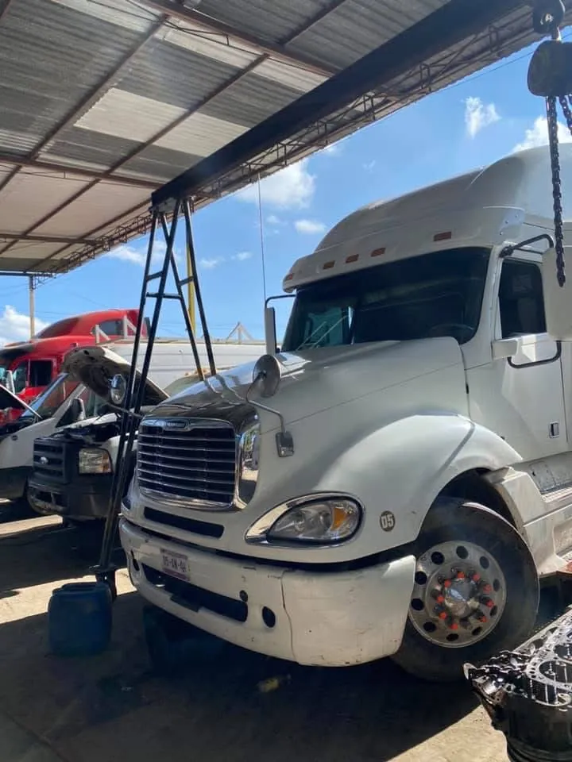
Servicio diésel especializado. Mantenimiento, reparación y atención a unidades de transporte.
La historia de Servicio Diésel Murillo comienza en 1973 en León, Guanajuato, con el Sr. Isaías Murillo. En el año 2000, la empresa adquirió instalaciones propias para continuar desarrollando su servicio al sector transporte.
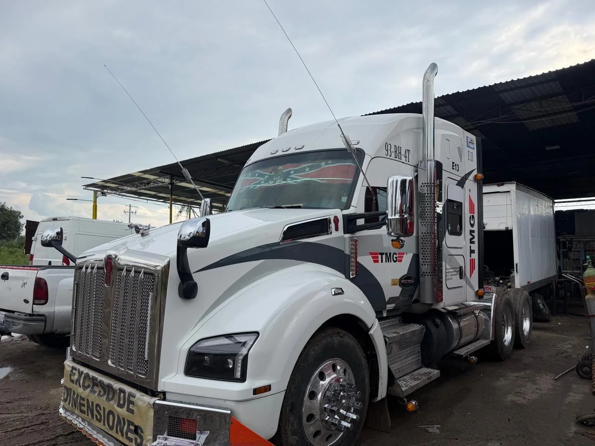
Brindar soluciones integrales de mantenimiento diésel con seguridad, calidad y eficiencia, para mantener las unidades de nuestros clientes disponibles, confiables y en movimiento.
Ser una empresa referente en servicio diésel, reconocida por la confiabilidad de sus soluciones, la calidad de su atención y su compromiso con la disponibilidad operativa de las unidades de sus clientes.
Conoce nuestros servicios. Elige uno y comunícate directamente con nuestro equipo por WhatsApp, sin registros ni formularios.
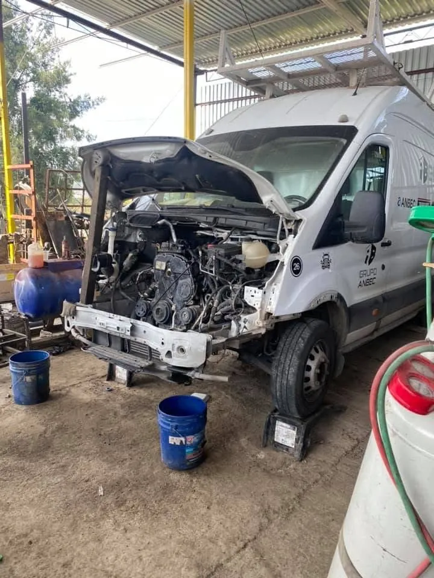
Revisiones y mantenimiento periódico para reducir el riesgo de fallas y conservar las condiciones de funcionamiento de tu unidad.
Solicitar este servicio ↗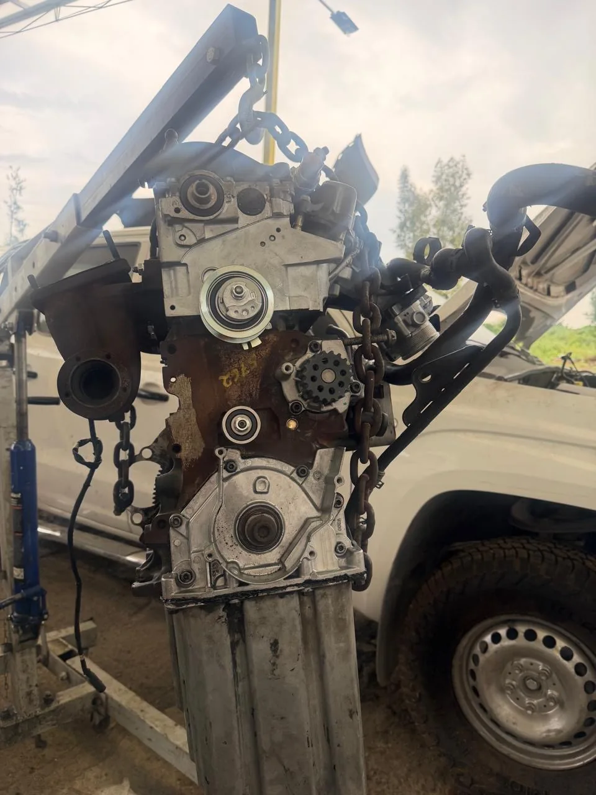
Revisión y atención de fallas mecánicas para recuperar el funcionamiento de la unidad, según el diagnóstico del taller.
Solicitar este servicio ↗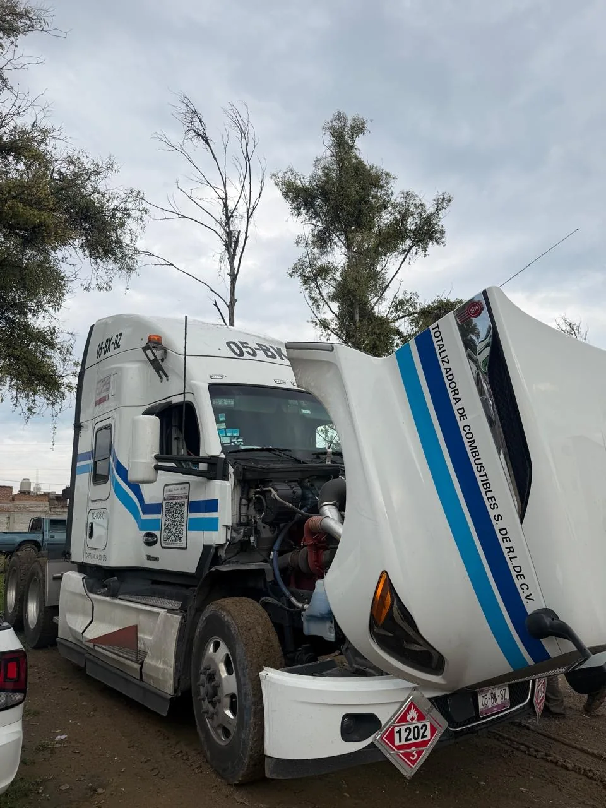
Revisión y detección de posibles fallas electrónicas en unidades diésel. Consulta con nuestro equipo sobre la atención que requiere tu unidad.
Solicitar este servicio ↗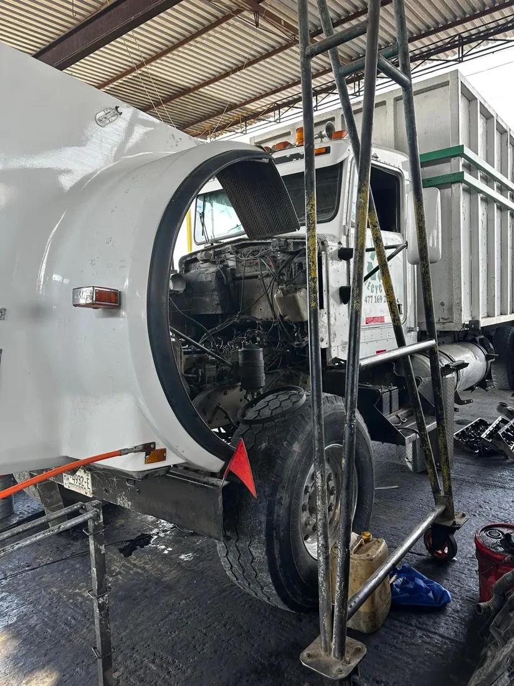
Atención a requerimientos de mantenimiento mecánico y eléctrico. Describe la falla directamente a nuestro equipo.
Solicitar este servicio ↗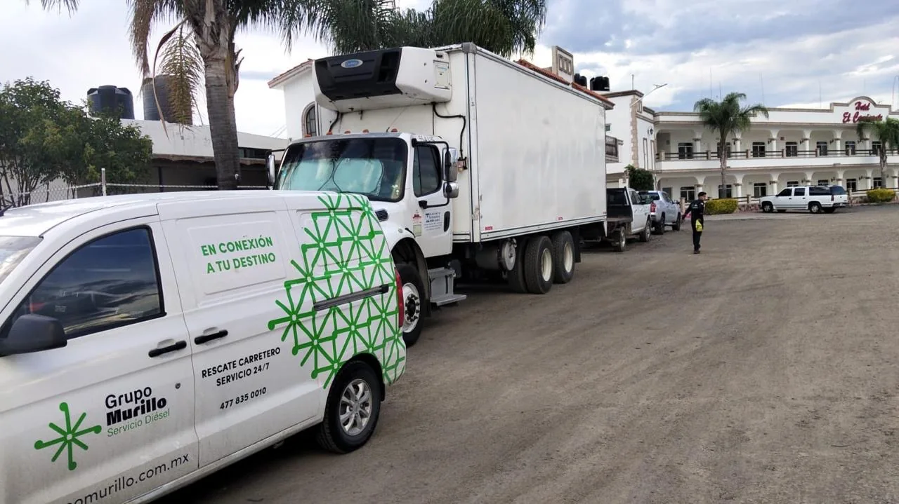
Cuéntanos dónde se encuentra la unidad para coordinar la atención. Puedes pedir auxilio para ti o para otro operador.
Imágenes de unidades, reparaciones y servicios de auxilio de Grupo Murillo.
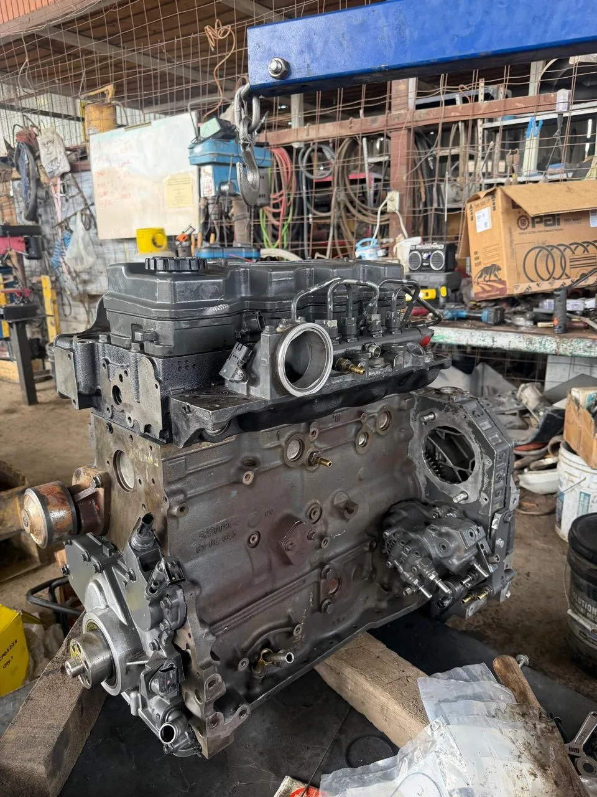
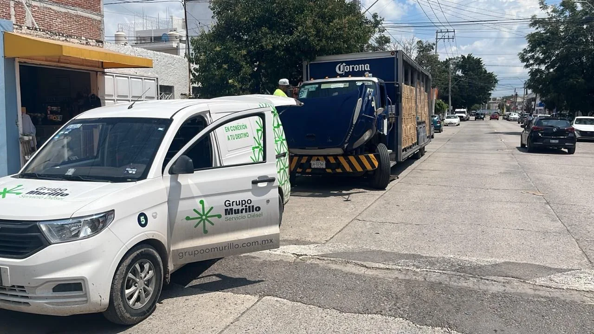
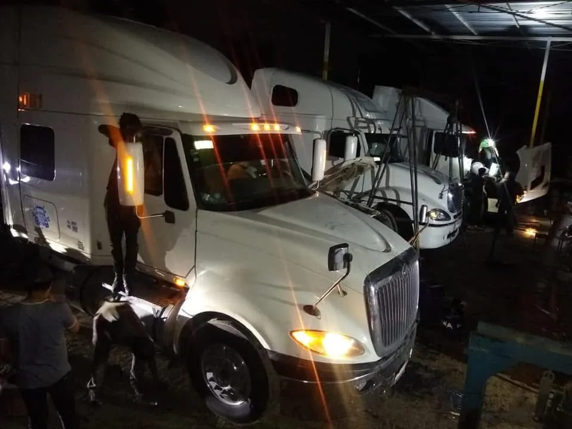
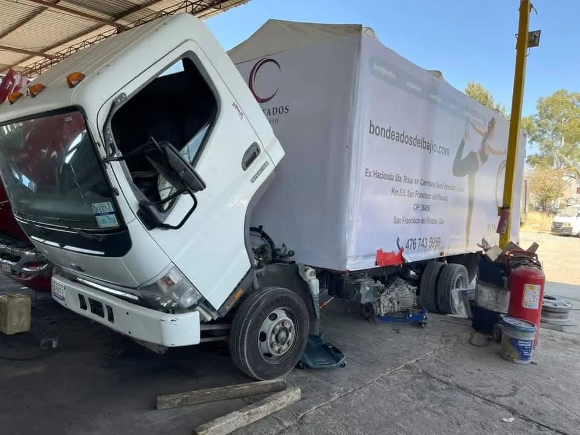
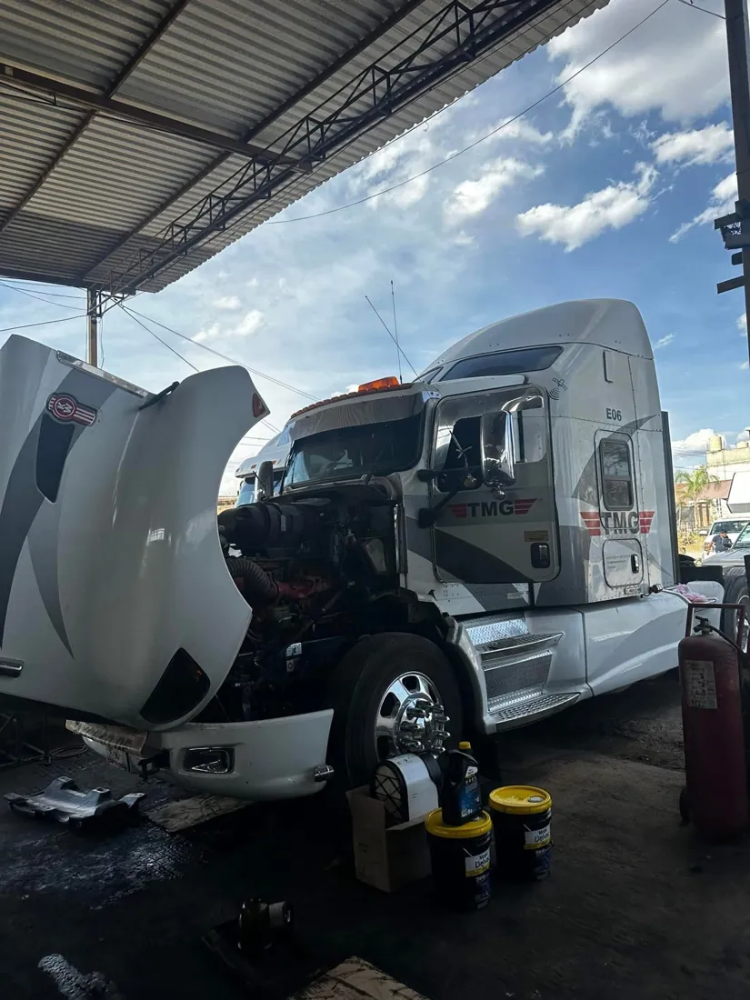
Priorizamos el cuidado de las personas en cada intervención.
Nos hacemos cargo de nuestras decisiones, resultados y recursos.
Cumplimos procesos y acuerdos para mantener un trabajo ordenado.
Buscamos realizar correctamente cada trabajo y evitar retrabajos.
Cumplimos nuestros compromisos con cada cliente y unidad.
Coordinamos esfuerzos entre el taller y las áreas de apoyo.
Aprendemos de nuestros resultados para mejorar cada día.
Visítanos o comunícate directamente con el taller. Nuestro equipo te orientará sobre el servicio requerido.
Enviar WhatsApp ↗